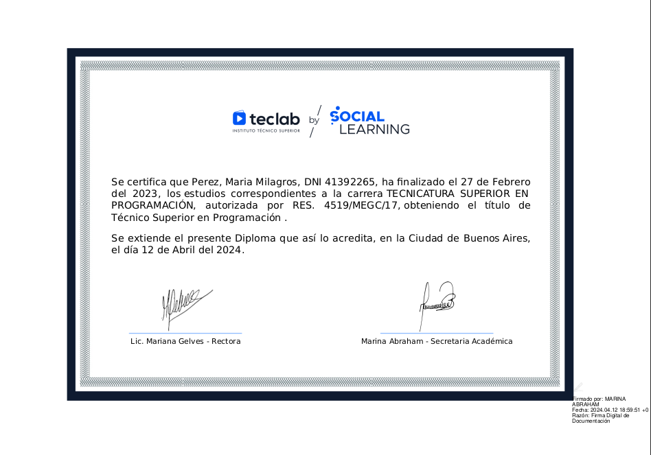

Soy María Milagros Perez, desarrolladora backend con experiencia profesional en Java, Kotlin, Erlang y Elixir. Me especializo en el diseño de sistemas robustos, arquitectura de microservicios y en la implementación de protocolos de mensajería como Kafka y WAMP.
Actualmente trabajo en Leapsight, donde colaboro en el mantenimiento y evolución de código, la integración de servicios externos y el desarrollo de nuevas funcionalidades orientadas a microservicios. Previamente, formé parte del equipo de Wenance, contribuyendo activamente en un entorno ágil con Scrum, utilizando tecnologías como Spring Boot, PostgreSQL y Git.
Aunque mi enfoque principal es el backend, también tengo conocimientos básicos de HTML, CSS y JavaScript, lo que me permite colaborar con equipos frontend y desarrollar interfaces simples cuando es necesario. Me gusta experimentar con el diseño visual y entender cómo se construye la experiencia del usuario.
Además, complemento mi perfil con formación en Ciberseguridad, donde profundizo en conceptos clave para el desarrollo seguro de software. Esta perspectiva se potencia con mi interés por la calidad del código, la colaboración en equipo y la mejora continua.
Me apasiona crear soluciones limpias, eficientes y sostenibles, combinando lo técnico con una mirada estratégica y humana del desarrollo.
Me considero proactiva, autodidacta y orientada a la mejora continua. Me gusta el trabajo en equipo, el testing, y también la creación de contenido técnico y artístico. Busco seguir creciendo profesionalmente y aportar valor desde lo humano y lo técnico.
